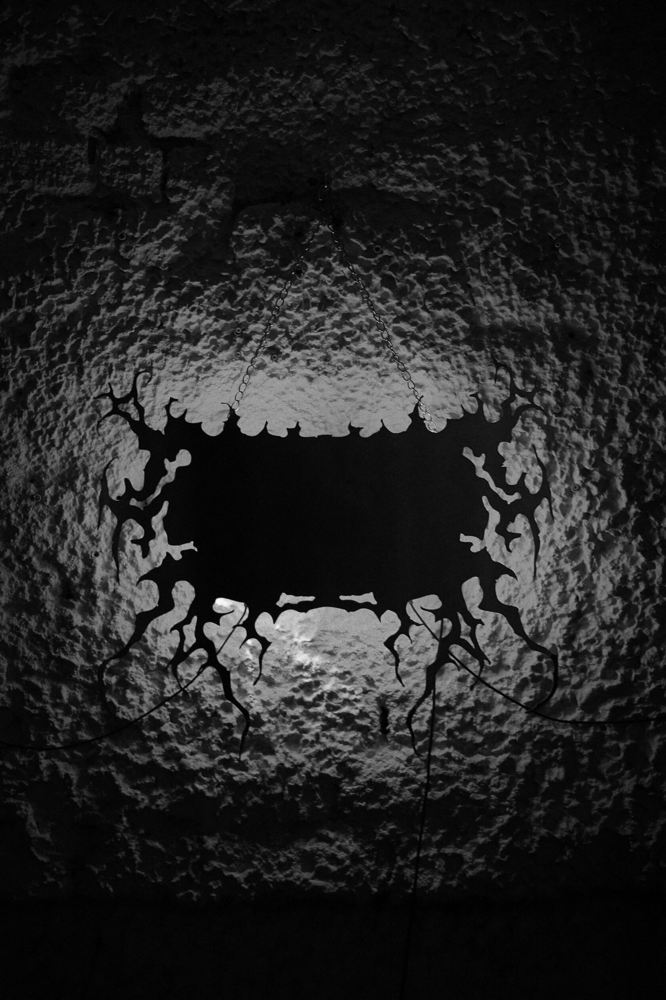
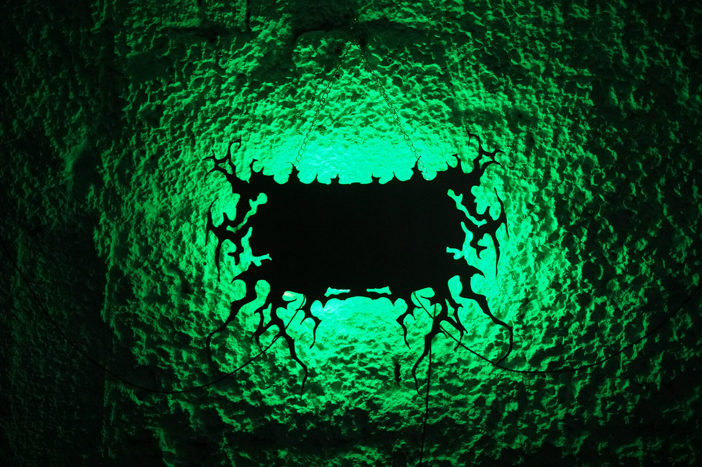
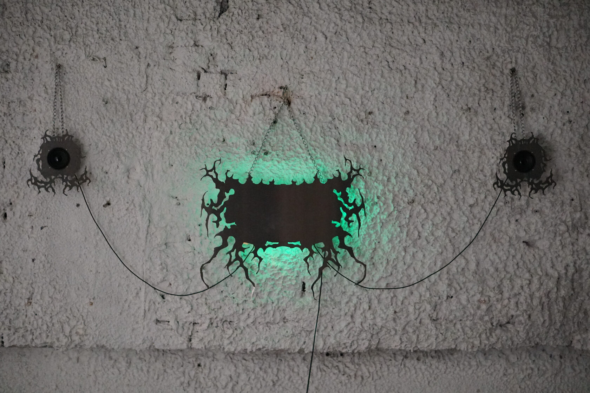
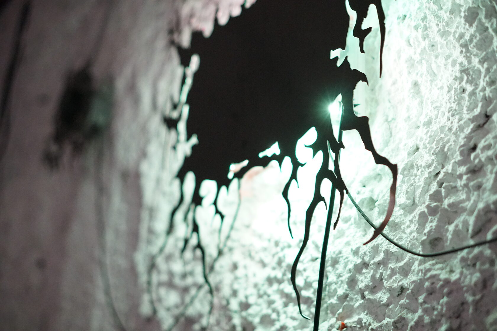
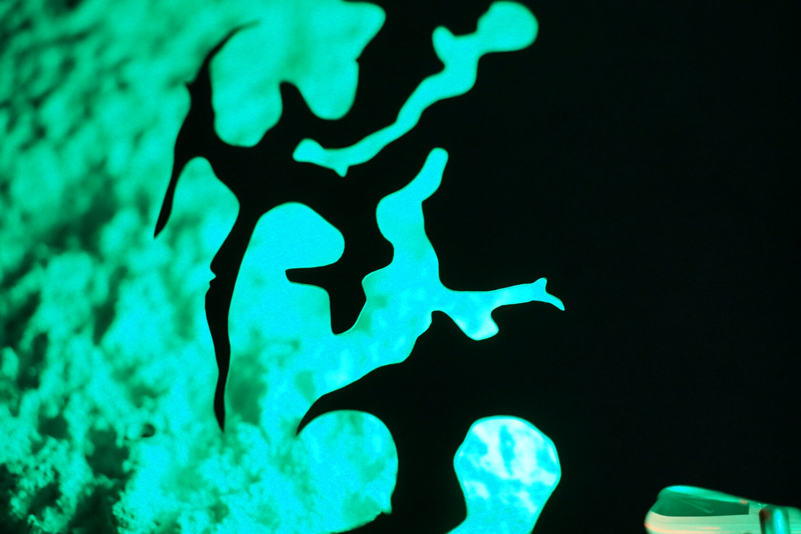
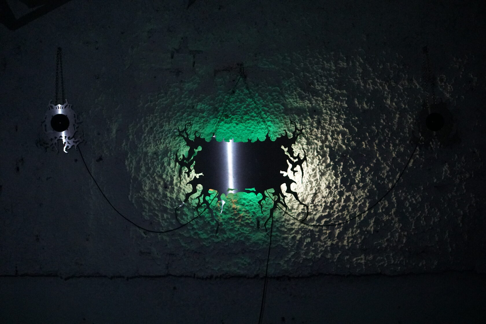

VLADISLAV GENERALOV & SAIDA NARYSS
AURIS IRRADIARE

«Auris Irradiare» is an audiovisual object that manifests a speculative entity emerging through the fracture of the material world — a result of collective mental explorations by its authors.
Glimpses and echoes of the sought unconditional essence inspire digital algorithms, radiating and intertwining within acoustic and electromagnetic resonances and physical feedback loops.
stainless steel, arduino pro micro, daisy seed, speakers, SPI LED strip, program code




